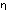

and the co-ordination of the truth or falsity of the whole proposition with the truth-combinations of the truth-arguments by lines in the following way:

This sign, for example, would therefore present the
proposition p  q. Now I will proceed to inquire
whether such a proposition as ~(p . ~p) (The Law of
Contradiction) is a tautology. The form "~
q. Now I will proceed to inquire
whether such a proposition as ~(p . ~p) (The Law of
Contradiction) is a tautology. The form "~ " is written
in our notation
" is written
in our notation
the form "
. " thus :--
Hence the proposition ~(p . ~q) runs
thus :--
If here we put "p" instead of "q" and examine the combination of the outermost T and F with the innermost, it is seen that the truth of the whole proposition is co-ordinated with all the truth-combinations of its argument, its falsity with none of the truth-combinations.